ManualUpdated September 2026
How zoevo works.
The ideas behind sources, goals and routines, step-by-step how-tos for everyday tasks, and answers for when something doesn’t behave the way you expect.
Free · Android · In‑app purchases
zoevo in 60 seconds
Three building blocks. Everything else sits on top of them.
-
1 · Sources
Log what you do
A tally counts taps, a stopwatch adds up time and a focus source counts finished sessions. Each has its own name, color and icon.
-
2 · Goals
Decide what counts
A daily or weekly goal measures one source against a target: at least a number (Minimum) or at most (Maximum).
-
3 · Routines
Play it step by step
A routine is an ordered checklist. Its tally, focus and stopwatch steps log straight into their sources, so your goals move as you go.
Routine steps log into sources, and every goal on a source moves with it.
A few words first
- Stopwatch
- The start/stop kind of source. The app labels it Timer, in a section called TIMERS.
- Minimum (Aim) and Maximum (Cap)
- A goal’s direction. Editors say Minimum and Maximum; the setup wizard says Aim and Cap.
- Settings
- Open them with the person icon, or your Google photo when you’re signed in. The first section, ACCOUNT, is where you sign in. In a small window the menu calls it Account.
- Timeline
- The progress screen with streaks and success rates. Open it with the grid icon.
Key concepts
How zoevo thinks
What each building block is, how progress is judged and where everything lives. Skim the headings; most sections end with a link to the matching how-to.
Finding your way around
zoevo opens on the main screen. It has three sections, each with two rows of square tiles: DAILIES, WEEKLIES and ROUTINES. In portrait they’re stacked and scroll sideways; in landscape they sit side by side as three columns that scroll up and down.
The top bar, left to right
- The middle toggle. In run mode it’s the list filter (Advanced mode only). In edit mode it switches between Goals and Sources.
- Tour this screen. A short guided tour of what you’re looking at. Advanced mode only: in Simple mode an eye button takes its place.
- Edit or run. A pencil means you’re in run mode; tap it to Switch to edit mode. A crossed-out pencil means you’re editing; tap it to Switch to run mode.
- Timeline. Streaks, success rates and history.
- Settings. Sign-in, zoevo+, display mode, appearance, language, week planning, the setup wizard, offline backup and data deletion.

Tip
Looking for Settings? They’re behind the person icon at the top right, which shows your Google photo once you’re signed in. Every setting is on that one screen.
Small windows
In split screen or a pop-up window, a thin blue-grey rail replaces the top bar. It keeps the edit/run button and the middle toggle and moves the rest into a three-dot menu: Timeline, Account and, when it’s time to plan, Plan coming week now, Dismiss and Turn off (an orange dot on the menu tells you). Section labels, the plan button and the automatic tour are hidden there.
Where to find things
| To… | Go to |
|---|---|
| See streaks and success rates | The grid icon: Timeline |
| Manage tallies, stopwatches and focus sources | Edit mode › Sources |
| Switch display mode, appearance or language | Settings › MODE, APPEARANCE or PREFERENCES |
| Plan next week, change the week start | Settings › PLAN THE WEEK |
| Get more goals from suggestions | Settings › SETUP › Re-run setup wizard |
| Try, buy or restore zoevo+ | Settings › the zoevo+ card |
| Save or restore a backup file | Settings › OFFLINE BACKUP |
| Clear data or delete your account | Settings › DATA DELETION |
Sources: what you track
A source is the raw thing you record: taps, time or sessions. Goals measure a source, and routines feed it. Each source has a name (up to 10 characters; an emoji counts as 2), a color and an icon, and every goal and routine step built on it wears the same color and icon.
Tally Tallies
A number per day. Each tap adds one: glasses of water, push-ups, pages.
Stopwatch Timers
Start and stop; the elapsed time adds up for the day. Several can run at once. The app labels it Timer.
Focus Focus
Sessions of a fixed Session length: 25 minutes by default, 1 to 240 in 5-minute steps. Each finished session adds 1 for the day.
One source, many goals
A reading source can drive a daily goal, a weekly goal and a routine step at the same time. Log it once and all of them move.
That’s also why changing the color, icon or session length in a goal editor can change other tiles. When a source is shared, the editor says so: This source is shared with 2 other entries — color, icon, and session length here apply to all of them.
Where sources live
- In edit mode, switch the middle toggle to Sources (the layers icon). Tap a source to edit it; long-press it for View history, archive and delete.
- You can also create one on the spot with the New tile while picking a source for a goal or a routine step.
- Sources aren’t limited by the free plan: everyone can have up to 99 of each kind.
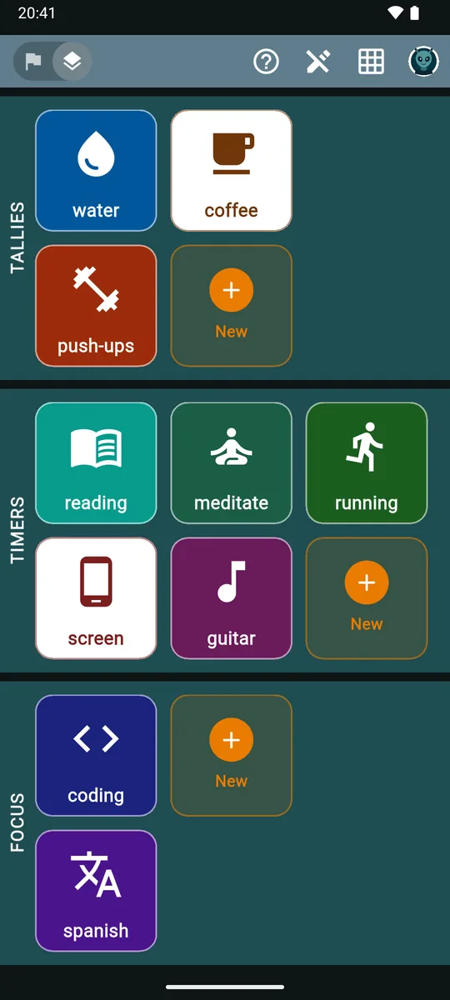
How toLog progress
Daily and weekly goals
A goal turns a source into a target. There are two kinds.
| Property | Daily | Weekly |
|---|---|---|
| Measures | One tally, stopwatch or focus source | One tally, stopwatch or focus source, or one of your dailies |
| Target | Per day | Over one week |
| Planned days | You pick the weekdays that count | None: every week counts |
| Reminder | At a planned time | Once, near the end of the week |
| Streak | Yes | No |
A weekly that counts a daily
When you create a weekly, the DAILIES section of the picker (Count a daily you already track
) lets you count days completed instead of an amount. The target is in days, from 1 to 7.
- A day counts when the daily succeeded that day, planned or not, and wasn’t marked skipped or missed. Days after today never count.
- For a Maximum daily, today only counts once the day is over, and an unplanned day only counts if you logged something and stayed within the cap.
- Its tile shows diamond marks and takes its color and icon from the daily. To change them, edit the daily.
- Tapping it doesn’t log anything. It shows a hint instead:
This weekly counts how often its daily is completed. Complete the daily itself to make progress here.
Long-press offers only Normal, Missed and Skipped.

Defaults and limits
- A new daily starts at 1 (tally or focus) or 30 minutes (stopwatch), planned on all seven days. A new weekly starts at 5 (tally, focus or days) or 3 hours (stopwatch). The name starts as the source’s name.
- Targets are whole numbers above 0. Stopwatch targets use hour and minute fields, up to 168 hours.
- The free plan allows 5 active dailies and 3 active weeklies; zoevo+ allows up to 99 of each. See zoevo+ and the free plan.
Minimum (Aim) and Maximum (Cap)
Every goal has a direction, chosen with the Minimum / Maximum toggle in its editor. Minimum is for things you want more of, Maximum for things you want to keep under a limit.
Minimum (Aim)
The target row reads “at least:”
- You succeed when you reach the target. Hitting it exactly counts.
- Colored tile with a white icon and name.
- Marks fill from the left, each with a check.
- Can have a stretch goal and a reminder.
Maximum (Cap)
The target row reads “at most:”
- You succeed as long as you stay at or under the cap. Landing exactly on it is fine; one more is a breach.
- A breach shows as a miss straight away. Target met only appears once the day (or week) is over, because until then you could still go over.
- White tile with a colored icon and name.
- Marks fill from the right, each with a cross. The empty marks on the left are what you have left.
As you use up a cap, its marks and ring change color:
- 60% of the cap
- 80%
- 100% and over
- a mark exactly at the cap
A mark past the cap is red, and a cap of 0 turns red on the first unit.
Heads-up
Maximum goals have no stretch goal and no reminders, and switching a daily to Maximum turns its reminder off. The weekly editor still shows + add stretch goal and the reminder switch on a Maximum weekly, but neither does anything there.
Reading a tile
In Advanced mode every goal tile carries its progress on its face. (Simple mode keeps just the icon and the name; see Display mode and appearance.) These are real tiles from the app:
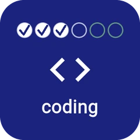
Focus daily3 of 4 sessions plus 2 stretch slots, one circle each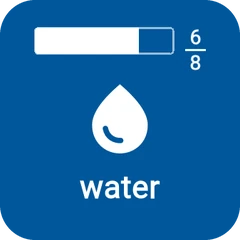
More than 6 slotsA bar with value over target Stopwatch dailyCounts down to the target; the ring fills
Stopwatch dailyCounts down to the target; the ring fills Past the targetCounts up the extra time, with a check
Past the targetCounts up the extra time, with a check MaximumWhite tile; the ring warms up near the cap
MaximumWhite tile; the ring warms up near the cap- Weekly counting a dailyOne diamond per day
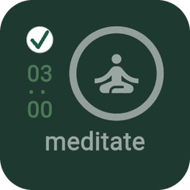
Target metGreyed out, with a check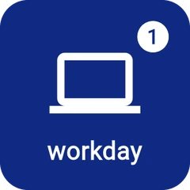
RoutineThe badge counts today’s runs
The mark strip
| Looks like | Means |
|---|---|
| Squares: a tally, one square per unit of the target. Filled squares carry a check. | |
| Circles: focus sessions. | |
| Diamonds: a weekly counting the days of a daily. | |
| Light green slots after the target: the stretch goal. | |
| Crosses from the right: a Maximum goal. Empty marks are your headroom. | |
| A bar: used when target and stretch together need more than 6 slots. |
A goal with a target of 1 shows a single larger mark once it’s done.
Stopwatch tiles
- No marks. The time column, minutes over seconds, counts down to the target.
- Past the target it counts up the extra time with a check badge: light green on Minimum, red on Maximum.
- A ring around the icon shows progress. On Minimum a second green ring grows toward the stretch goal.
- While it runs, the tile gets a breathing border and turns slightly brighter, and a dot circles the ring once a minute. A running stopwatch is never greyed out, always sorts to the top of its section and always shows in Simple mode.
Grey tiles and markers
- Minimum dailies grey out once the target is met, and stay grey while you chase the stretch.
- Minimum weeklies with a stretch goal stay bright until the stretch is met.
- Maximum tiles grey out once the cap is breached.
- Skipped and missed tiles always grey out and carry a marker: for skipped, for missed.
- Routine tiles show a white badge in the top-right with today’s runs (“+” above 9), a blue skip or red cross in the top-left when today is skipped or missed, and a Paused pill when a paused run is waiting for you.
- Locked tiles (over the free limits) look normal but carry an orange lock badge. Archived items only show in edit mode, greyed out.
Stretch goals
A stretch goal is a second, higher target for a Minimum goal. In the editor tap + add stretch goal and enter a number after stretch: reach. It has to be greater than the target. The minus button (remove stretch goal) takes it away again.
In the app’s own words: An optional bonus target beyond your main goal. Hitting the regular target is a normal success; hitting the stretch is shown in a richer green so standout days stand out at a glance.
- On tiles, stretch slots follow the target slots in light green.
- On the Timeline a stretch day is dark green.
- It’s a visual bonus only. For streaks and success rates a stretch day counts the same as hitting the target.
- A stopwatch daily also tells you when you get there:
Stretch goal reached — the timer keeps running.
- Target met
- Stretch goal hit
- Stretch slot on a tile

Planned days, time and reminders
Planned days
The Planned days pills (in a daily’s SCHEDULE section, or Days in a routine) choose the weekdays that count. The editors always start the row on Monday.
- M
- T
- W
- T
- F
- S
- S
The weekdays this should count for. Unplanned days don't penalise you — your value still tracks, but those days won't show as missed if you skip them.
The weekday pattern and the actual plan
The pills are a pattern. zoevo turns it into a real plan for each day, from today until four weeks after the current one, and adds another week at every week change.
- Changing a weekday in the pattern rewrites that weekday in all the upcoming weeks, replacing any one-off change you made on it. Other weekdays keep their one-off changes.
- You can plan or unplan single days on the Timeline (today and later) and in Plan the week.
- Past plans never change. You can still mark past days skipped or missed and correct their values.
Planned time
Planned time: shows — : — until you set it. The picker starts at 09:00, and the × clears it. The time also sorts tiles within a section: earlier first, untimed last.
Reminders
- The Reminder: switch unlocks once a planned time is set; for a daily it also has to be a Minimum goal. It’s off by default, and setting a time doesn’t turn it on.
- Turning on a daily reminder asks for Android’s notification permission again if zoevo doesn’t have it.
- The notification shows the name and
It's your planned time for 'reading'.
- There’s no reminder on days that aren’t planned, that you marked skipped or missed, that are already done (a daily at its target, a routine run at least once), or once the time has passed.
- zoevo schedules reminders for the next 3 planned days and refreshes them whenever you open the app, return to it or leave it. A reminder clears itself at the end of its day.
Weekly reminder
A weekly’s REMINDER switch sends one combined notification at 08:00 on the second-to-last day of your week (Saturday, if your week starts on Monday): Weekly reminder, Still open this week: …
with up to three names. It includes Minimum weeklies with the switch on that aren’t met, skipped or missed yet.
Heads-up
Daily, weekly, routine and planning reminders can arrive a few minutes late: Android delivers them inexactly to save battery. Only the focus end alarm and the stopwatch goal alerts are exact.
Day states
Each day of a daily ends up in one of these states. The Timeline, the Daily history and the planner use the same colors.
| Look | State | When |
|---|---|---|
| Planned | Planned for today or later, not decided yet. | |
| Unplanned | The weekday isn’t in the plan, or you unplanned the day. | |
| Target met | Minimum: you reached the target. Maximum: the day ended within the cap. | |
| Stretch goal hit | Minimum: you reached the stretch goal. | |
| Target met on an unplanned day | Not planned, but it would have succeeded. For Maximum: a past day where you logged something and stayed within the cap. | |
| Stretch goal hit on an unplanned day | Not planned, and you reached the stretch goal. | |
| Missed | You marked it missed, a planned past Minimum day stayed below target, or a Maximum went over the cap (red at once, even today). | |
| Skipped | You marked a planned day skipped. | |
| Before goal creation, or archived | Outside the goal’s active life. Can’t be tapped. |
- Normal, Skipped and Missed come from the long-press popup and only apply to planned days. Normal clears a skip or a miss.
- On past days the plan is fixed, but you can still set skipped or missed and change the value. See Skip, miss or backfill a day.
Streaks
Every daily has a streak: the flame in the Timeline’s Streak column and Current streak in its Daily history, counted back from today. Weeklies and routines don’t have streaks.
Keeps it going
- A planned day you succeeded on
- An unplanned day that would have succeeded (Minimum: target reached; Maximum: a past day with something logged, within the cap)
Doesn’t count either way
- Skipped days
- Unplanned days that didn’t succeed
- Days before the goal existed, and archived days
- Today, while it’s still open
Starts it over
- A day marked Missed
- A planned past day that failed
- Going over a Maximum cap, even today
Flame colors
- from 1 day
- from 30
- from 90
- from 200
- 365 (max)
- A streak of 0 shows no flame.
- In landscape the Timeline adds a Best column, an outlined flame with the longest streak of the last 365 days.
- Streaks are counted over the last 365 days, so a flame never shows more than 365.
Success rates
A daily’s success rate appears in the Timeline’s Wk column (plus Mo and Yr on wide screens) and as Success rate (30 d) in its Daily history.
Success rate =days you hit divided by days planned while active
- A stretch day counts the same as a hit.
- Missed days count against you. Skipped days, days before the goal existed, archived days and future days are left out entirely.
- Unplanned hits are a bonus: they add to the days you hit but not to the days planned, so a rate can go above 100%.
- Today only counts once it’s decided: a Minimum hit, a Maximum breach, or a day you marked. An unplanned Maximum today never counts.
- If nothing was planned in the range, the cell stays empty rather than showing 0%.
- On the current week, Mo and Yr are month-to-date and year-to-date. On a past week they cover the month and year of that week’s first day. They’re hidden on future weeks.
Weekly goals
Weeks hit divided by active weeks in the visible window, always between 0 and 100%. Skipped weeks are left out. The current week only counts once it’s hit or marked missed (for Maximum: once it’s breached or marked missed).
Routines
Days with at least one run divided by planned days, over 8 weeks. Runs on unplanned days are a bonus, so this can top 100% too. Skipped days are left out, missed days count against you even if you ran it, and today is left out until you run it.
Routines and activity kinds
A routine is an ordered checklist you play through, like a morning routine or a workout. It has a name, color and icon, Days, Planned time:, Reminder: and a list of ACTIVITIES, with the total planned time in a pill.
A day with at least one run counts as done. Only finished runs are logged, and you finish by confirming at the end.
Each step is one of four kinds, chosen in the Add Activity sheet. The kind can’t be changed later.
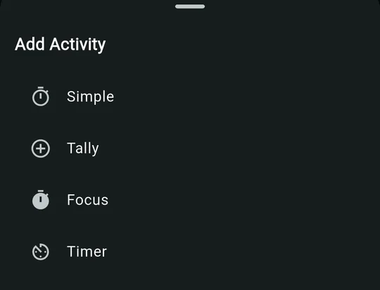
| Kind | You set | While it runs | What it logs to its source |
|---|---|---|---|
| Simple | Name, place, duration, color, icon | A clock that turns amber past the plan, “of 05:00 planned”, Reset, Pause/Continue and −30s | Nothing |
| Tally | Name, place, source, count, duration | Elapsed / planned time, count / target, “today: N” and a big + 1 | Every tap adds 1 right away. Moves on by itself when the count reaches the target; you can go back and keep counting. |
| Focus | Name, place, source, count (duration = session length × count) | Count / target, “today: N” and a play button that opens the focus timer | Each finished session adds 1 right away, including one ended with Complete now. A stopped session adds nothing. Moves on when the count is reached. |
| Timer | Name, place, source, Planned duration | A big clock from 00:00, “today:” with the source’s total, Start / Pause / Continue | Runs the source’s stopwatch and adds the real seconds to today. Leaving the step (Back, Skip, Complete or exit) stops it. |
- Picking a source fills in an empty name with the source’s name.
- If you delete a source, the routine steps that used it become plain timed Simple steps.
- The free plan allows 1 active routine; zoevo+ allows up to 99.
Heads-up
The info text next to Source says completing the activity adds the count. In fact every + 1 tap and every finished focus session is logged the moment it happens, and stays logged even if you discard the run.
Pause, continue or discard
Leaving a routine halfway offers Pause and continue today (Resume from where you left off. Progress is dropped at midnight if you don't finish.
) or Discard progress (Tallies, timer seconds, and focus sessions you've already counted will stay.
). A paused routine shows Paused on its tile; tap it to resume. Paused time isn’t included in the logged duration, and a discarded run isn’t logged at all.
Templates
A new routine can start blank or from one of nine templates: seven daily ones (Wake-up, Pre-work, Commute, Midday, Pre-workout, Evening and Bedtime), each in S, M or L, plus Weekly review and Weekend reset, which come in a single version.
Run mode and edit mode
Run mode, the default, is for tracking. Edit mode is for building. Switch with the pencil in the top bar. In edit mode the sections turn turquoise, and each ends with an orange New tile.
Run mode
| Tile | Tap | Long-press |
|---|---|---|
| Tally goal | +1 today | − / + and Normal, Missed, Skipped |
| Stopwatch goal | Start / stop | Time chips and Normal, Missed, Skipped |
| Focus goal | Opens the timer and starts a session | − / + and Normal, Missed, Skipped |
| Weekly counting a daily | Shows a hint | Normal, Missed, Skipped |
| Routine | Runs it, or resumes a paused run | Normal, Missed, Skipped for today |
Archived items are hidden in run mode. If nothing is active yet, zoevo keeps you in edit mode and the button is disabled.

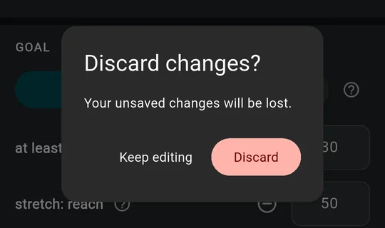
Edit mode
- Tap a tile to open its editor; the orange New tile creates one. The green check saves. Going back with unsaved changes asks Discard changes? first: Keep editing or Discard.
- Long-press a tile for two buttons: archive or unarchive (grey, left) and delete (red, right). Archived items show greyed out.
- The middle toggle switches between Goals (the flag) and Sources (the layers). Leaving edit mode always takes you back to Goals.
Pinning and order
The star in an editor’s top bar (Pin / Unpin) puts the item first in its section once you save. Within DAILIES, tiles are ordered by:
- active before archived,
- pinned,
- a running stopwatch,
- not yet met, then missed, skipped, completed and not planned today,
- planned time, earliest first,
- Minimum before Maximum,
- name.
WEEKLIES use the same order without the time. ROUTINES go pinned first, then still to do, missed, skipped and ran today, then the most recently run, then name. After you tap a tile it holds its place for a moment, then slides to its new spot.
The run-list filter
In Advanced run mode, the toggle on the left of the top bar decides which dailies and routines are listed. From left to right:
- Show only outstanding. Planned today and not decided yet. Done, missed and skipped dailies drop out, and so do routines that already ran or were skipped or missed.
- Show today’s planned. Default Only dailies and routines planned for today, including ones already done, skipped or missed.
- Show all. Every active daily and routine.
Weeklies are never filtered. zoevo remembers your choice on this device, and edit mode ignores it.
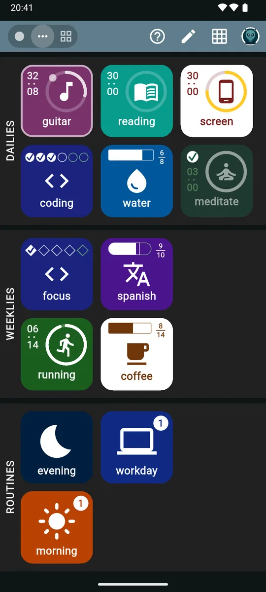
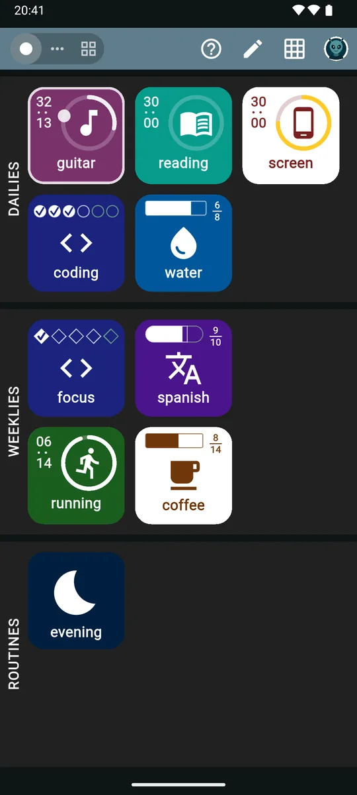
Display mode and appearance
The display mode decides how much detail you see: Simple or Advanced. Pick one under Settings › MODE. It’s saved per device, and Advanced is the default.
Advanced
Mark strips, rings and time columns, every override and edit option within reach, the three-way filter and the tour button.
Simple
Tiles show a larger icon and the name, nothing else. Only today’s outstanding planned items are listed, with no filter and no tour button on the main screen.
In Simple mode an eye button (Show completed / Hide completed) reveals the rest, each with a badge in the middle:
- Done
- Missed, or cap breached
- Skipped
- Not planned today
A running stopwatch keeps its breathing border and pulsing dot and is never hidden. Long-press popups, the editors and the Timeline work exactly as in Advanced.


Appearance: dark, light or system
Under Settings › APPEARANCE, pick Dark (the default, zoevo’s original look), Light, or System, which follows your phone’s dark theme and switches when it does. The change is instant.
- Your tiles keep their colors, and so does everything drawn on them. On light, a Maximum goal’s white tile gets a thin outline in its color, and done, skipped or missed tiles turn a muted grey instead of fading out.
- The focus timer, the routine runner, the blue-grey top bar and the tours look the same in both.
- Like the display mode, the appearance is saved on this device. It isn’t synced or part of a backup, and Delete all data leaves it as it is.
- The short launch screen stays dark: Android draws it before zoevo starts.
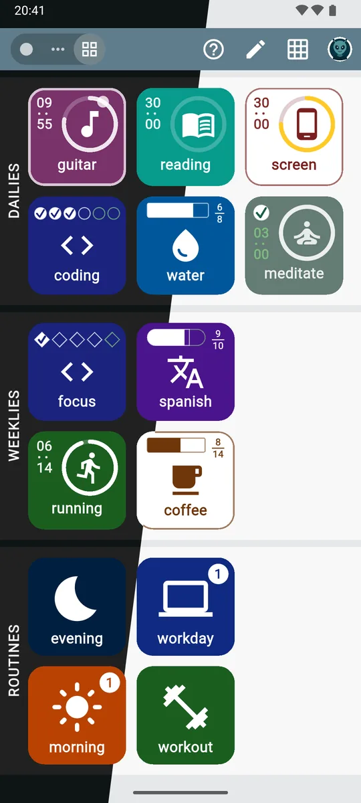
The Timeline
Open it with the grid icon on the main screen. The button opens the Legend, and a floating button jumps to the next section: Weeklies, Routines or Dailies.
Dailies
- The header shows the week, like “Sep 24 – Sep 30”. Use ‹ › or swipe to change week: back to the week of your oldest daily, forward to four weeks ahead.
- Each row has the daily’s tile, seven day cells in your week order, the Streak flame and the Wk success rate. Landscape adds Best; wide screens add Mo and Yr.
- A daily that was archived for the whole week has no row.
- Tap a daily’s own tile for its Daily history.

| Day cell | Tap | Long-press |
|---|---|---|
| Today | Plan or unplan | Popup |
| A future day | Plan or unplan | – |
| A past day | Popup | Popup |
| Before creation or archived | – | – |
In the popup, Normal, Missed and Skipped only appear if the day was planned. The value buttons are always there, so you can backfill.
Weeklies — last 8 weeks
- Eight week cells, oldest on the left, under calendar week numbers, then a success rate.
- Tap the current or a past week for its popup, with override and value buttons.
- Long-press the weekly’s tile for its source history (not for weeklies that count a daily).
Routines — last 8 weeks
Each week cell is colored by how many planned days you ran the routine:
- Nothing planned
- No runs
- 1 run
- More runs
- Every planned day, or more
- Long-press a cell for a summary of the week, such as “3/5 planned”.
- Tap the routine’s tile or any of its cells for its history.
Locked items are read-only on the Timeline. Tapping one shows This item is locked. Upgrade to zoevo+ to use it.
with Upgrade now.
On the free plan
Dailies go back 4 weeks before the current one; after that the back arrow turns into a lock (Full history). The weeklies section shows 5 weeks, the current one and 4 before it, even though its header says “last 8 weeks”. Routines always show 8.
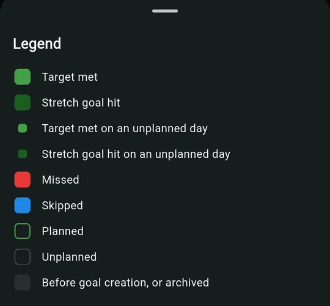
Histories
Daily history
Timeline › tap a daily’s tile
- A month calendar with Previous month / Next month, from the goal’s first month to this one.
- Tap today or a past day for the same popup as on the Timeline.
- Current streak, Success rate (30 d), This year, Last 30 days, Max day, Active days.
- A 30-day bar chart of sessions, tallies or minutes per day.
Source history
Sources › long-press › View history, or Timeline › long-press a weekly’s tile
- A heatmap over 12 weeks, Year or 2 years; brighter means more.
- Tap a day to change its value: − 1 / + 1, or −60m to +60m for a stopwatch.
- This year, Last 30 days, Max day, Active days.
Routine history
Timeline › tap a routine’s tile or cells
- A 12 weeks / Year heatmap of runs.
- Lifetime, This year, Last 30 days, Avg duration, Median, Longest.
- When you run this in 3-hour buckets, and Recent runs, the last 10.

Daily historyCalendar, stats, chart. 
Routine historyRuns and durations.
On the free plan, Daily history pages back only as far as the Timeline does.
Planning the week
Your Week start (Settings › PLAN THE WEEK, Monday by default) decides what a week is for weeklies, success rates and the Timeline, which day the weekly reminder comes, and when planning is offered.
The Plan the week screen
- Special days.
Mark special days to highlight columns
: tap day pills to tint those columns amber, for travel or an event. It’s a visual aid only and isn’t saved. - Target week. The week you’re planning has an amber date pill with Target week underneath. On the first day of your week that’s the current week; on any other day it’s next week. Arrows move to other weeks.
- Rows. DAILIES and ROUTINES, seven cells each: a green outline is planned, blank isn’t, blue is skipped, red is missed.
- Whole days. The top row plans or clears a day in one tap. An empty box means nothing is planned (tap to plan everything), a single check means some are (tap to plan the rest), and an amber double check means all are (tap to unplan all). Past days are disabled.
- Edits save instantly. The green check (Done) or Back closes the screen and marks the target week as planned.
- Locked items and items archived that week aren’t listed.
Three ways in
- The orange plan now button on the main screen. It appears on the last 2 days of your week and the first day of the next, until you’ve planned the target week, and only while Show plan button on home is on.
- Settings › PLAN THE WEEK › Plan coming week now, any time.
- The optional Plan-the-week reminder, off by default, at 18:00:
Plan the coming week
,Open zoevo to review next week's plan.
Tapping it opens the planner.
The setup wizard
On first launch, Welcome to zoevo asks how you’d like to begin:
Personalize Recommended
Pick your interests and time — we'll seed dailies, weeklies, and routines that fit.
Quick start with examples
A standard starter set: 5 sources, 4 dailies (one of them a sweets Maximum), 3 weeklies (one a TV-time Maximum) and 2 routines.
Start empty
Begin with no goals or routines. Add your own from the main screen.
Personalize takes four steps: your interests, how much time you have on weekdays and weekends, the parts of the day to anchor with routines, and a review where you can edit or remove every suggestion before anything is created. Get started walks through it.
Run it again later from Settings › SETUP › Re-run setup wizard. It skips the welcome, starts from your last answers and keeps what you have: suggestions you already own are tagged Already there, and steps that would join a routine with the same name show as, for example, “+2 to morning”. It checks the free limits against what it will add.
Notifications
| Notification | Comes from | Details |
|---|---|---|
| Daily and routine reminder | The Reminder: switch | Channel “Daily reminders”. May arrive a few minutes late. |
| Weekly reminder | A weekly’s REMINDER switch | Channel “Weekly reminders”. 08:00 on the second-to-last day of your week; Minimum only. |
| Plan-the-week reminder | Settings › PLAN THE WEEK | Channel “Planning wizard”. Opens the planner. |
| Running focus session | Automatic | Channel “Active Timer”: the source name, a live countdown, a progress bar and Pause / Continue, which work with the app closed. |
| Focus finished | Automatic | Channel “Timer Alarms”: the source name and “Time's up!”. An exact alarm when Android allows it. |
| Running stopwatch | Automatic | Channel “Running timers”. See below. |
| Stopwatch goal alerts | A daily goal on a stopwatch | “Goal time reached — the timer keeps running.”, “Time cap reached — the timer is still running.” and “Stretch goal reached — the timer keeps running.” Nothing is stopped. Only for the first daily on that source, not for weeklies, and not past midnight. |
The running stopwatch notification
- With a daily on the source, the clock counts down to the daily’s target, then counts up the extra time. Without one it counts up today’s total.
- Once past the target, the title gets a check mark (Minimum) or a cross (Maximum).
- Pause stops the stopwatch at that moment, and the tiles show it stopped. Continue starts it again.
- With two or more running, they’re grouped under a summary such as “2 timers running”.
Permissions
- zoevo asks for notification permission at first launch, and again only when you turn on a daily reminder.
- If exact alarms aren’t allowed, Enable Alarms & Reminders appears at launch:
Allow 'Alarms & reminders' so Focus timers alert you reliably and exactly on time.
Tap Open Settings, or × to decide later.

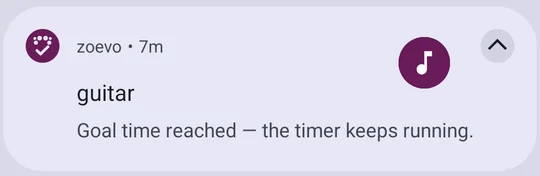
Home-screen widget
zoevo’s widget is a single resizable 1×1 tile, linked to one source.
| Linked to | A tap… |
|---|---|
| Tally | adds 1 to today, confirmed with “water +1” |
| Stopwatch | starts or stops it (“reading started”, “reading stopped”) |
| Focus | opens the timer and starts a session. A running session is just brought to the front and a paused one continues; a tap never restarts a session. |
- A tap opens zoevo to act: tallies and stopwatches confirm with a short message, and focus shows the timer screen.
- A new widget is grey and says Tap to link. Tapping it opens Widget link. Pick a source and the widget takes its icon.
- Widget taps never close what you have open in zoevo: a running routine or timer stays put.
- If its source is archived or deleted, the next tap opens the link screen again.


Account, guest mode and sync
Guest
The default
Everything works offline on this device. The account card reads Guest: Not synced — sign in to back up your data
.
Signed in with Google
Optional
Your data is backed up and synced across devices, and keeps working offline. Deleting data, deleting your account, exporting or importing a backup, and buying need a connection.
The first time you sign in
- If the Google account has no zoevo data yet, your guest data moves into it.
- If the account already has data, you’ll see that data instead. Your guest data stays on the phone and comes back when you sign out.
- A free trial you started as a guest moves into the account.
What’s saved where
- On this device: display mode, appearance, the run-list filter, Show completed and the language.
- With your account: the week start and all Plan the week settings.
Offline backup
Apart from the automatic cloud backup you get while signed in, Settings › OFFLINE BACKUP saves everything to a file you keep yourself, and brings it back on this or another phone.
- Export backup (zoevo+) writes your sources, goals, routines and history, plus the week start and Plan the week settings, to one file wherever you choose.
- Import backup works for everyone. It replaces all current data with the file’s once you confirm by typing DELETE. On the free plan, anything over the limits comes back locked.
- A backup leaves out your zoevo+ status and this device’s display mode, appearance and language.
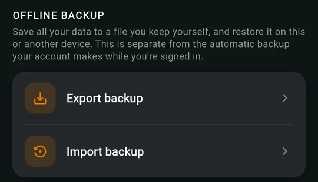
How toSign in and sync
zoevo+ and the free plan
| Feature | Free | zoevo+ |
|---|---|---|
| Active daily goals | 5 | Up to 99 |
| Active weekly goals | 3 | Up to 99 |
| Active routines | 1 | Up to 99 |
| Tallies, stopwatches, focus sources | Up to 99 of each | Up to 99 of each |
| Goal history | This week + 4 weeks back | Your complete history |
| Icons and colors | First 24 icons, first 10 colors | All 224 icons, 28 colors |
| Backup to a file | Import | Export and import |
- Goal history covers the dailies Timeline, Daily history and the weeklies section of the Timeline (see The Timeline). Routines always show 8 weeks.
- Backups: Settings › OFFLINE BACKUP › Export backup needs zoevo+; Import backup works for everyone. See Offline backup.
- Archived items don’t count toward the limits.
- At a limit you’ll see zoevo+ required, for example
You've reached the free limit of 5 daily goals. Upgrade to zoevo+ for more.
, with Cancel and Upgrade now. A locked color or icon opens the same dialog. - The free trial lasts 14 days, needs no sign-in, and works once per device and once per account.
Locked items
If a trial or subscription ends while you’re over the free limits, the newest items beyond the limit, by creation date, are locked. Nothing is deleted.
- They look normal but carry an orange lock badge. They can’t be run, edited or planned, and they’re read-only on the Timeline.
- Tap one for the Locked item sheet, with Upgrade now, archive and delete. Long-press also offers archive and delete.
- Archiving or deleting any item unlocks the next newest one. Upgrading unlocks everything.
The zoevo+ screen
Open it from the zoevo+ card in Settings or from any Upgrade now. Top to bottom: your status (Free tier or zoevo+ active, through Google Play, a promo code or the free trial, with the days left), Try zoevo+ free if you’re eligible, Sign in with Google when you’re signed out, Choose a plan with Monthly and Yearly at Google Play prices, Manage in Google Play once you have a Google Play subscription, Have a promo code?, Restore purchases and What you get.
Archive or delete
Archive
- Hides the item from run mode, pickers, planning and reminders.
- Keeps all its history. Archived days show faint grey on the Timeline and are left out of success rates and streaks.
- From the archive date on, the item is unplanned.
- Doesn’t count toward the free limits.
- Unarchive any time: it’s planned again from today using its weekday pattern.
Delete
- Removes it for good:
This cannot be undone.
- Deleting a daily also deletes weeklies that count it.
- Deleting a source also deletes the dailies and weeklies built on it (and weeklies counting those dailies), and turns its routine steps into Simple steps.
- Deleting a weekly or routine removes it and its skip and miss history.
Before you confirm a delete, the dialog lists everything that goes with it under “Will also delete:”, and steps that will change under “Will convert to plain timed blocks:”.
How toPin, archive or delete
Languages, help and tours
- Languages. English, German, French and Spanish. Settings › PREFERENCES › Language offers Device language (the default), English, German, French and Spanish. Device language uses the first language in your phone’s list that zoevo speaks, otherwise English, and follows the phone when you change it. Goals the setup wizard creates are named in your device language.
- The first-run tour plays once after setup and can’t be replayed: Welcome to zoevo, Daily goals, Weekly goals, Routines, Add and edit, Goals & sources, Edit & run, Your progress, Account & settings, and You’re all set.
- Screen tours. The button (Tour this screen) explains the screen you’re on, step by step, with the part it’s talking about in a spotlight. It’s on the main screen in Advanced mode, the Timeline, Daily history, the source and routine histories, the focus timer, the routine runner, every editor, the source picker, Plan the week, New routine, Settings and the zoevo+ screen. The main-screen tour follows what you’re looking at: run mode, the goals or the sources in edit mode.
- There’s no tour in Simple mode on the main screen, in a small window, in the setup wizard or on the widget link screen.
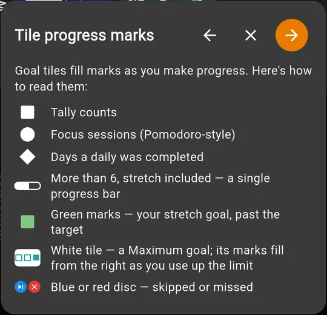
How-tos
Step by step
Short recipes for everyday tasks. Labels on a grey chip are exactly what you’ll see on screen.
Get started with the setup wizard
- Open zoevo and choose Personalize, Quick start with examples or Start empty. The steps below are for Personalize.
- What do you want to track? Tap any of the 12 interests (Food, Fitness, Sleep, Focus, Reading, Calm, Creative, Home, Social, Outdoors, Money, Work), then Next. What’s in each? explains them.
- How much time do you have? For Weekdays and Weekends, pick from none to a lot. Adjust per day lets you set each day separately.
- Anchor your day? Tap the slots that should become routines (Wake-up, Pre-work, Commute, Midday, Pre-workout, Evening, Bedtime, Weekly review, Weekend reset). A slot you add starts at M; tap S, M or L to change its length. The help button at the top (What’s in each?) shows what each slot contains.
- Looks good? Tap any suggestion to change its name, target, direction, planned days, source or color, or to remove it. Then tap Confirm.
- If More than the free plan appears, choose Start 14-day free trial, redeem a promo code (this needs a Google sign-in), or Use free limits for now. With free limits everything is still created, and the newest extras are locked.
- Allow notifications when Android asks. If Enable Alarms & Reminders appears, tap Open Settings and allow it, or × to decide later.
- Follow the short tour, and you’re on the main screen.
Tip
Nothing here is final. Settings › SETUP › Re-run setup wizard adds more later and keeps what you have. Quick start includes 2 routines, so on the free plan it asks about the trial too.

Sign in and sync
- Tap the person icon at the top right to open Settings. In a small window, use › Account.
- Under ACCOUNT, tap Sign in and choose your Google account.
- You’re back on the main screen with “Sign in successful” and your name.
- On another phone, install zoevo and sign in with the same account.
Heads-up
If that Google account already has zoevo data, you’ll see that data, not your guest data. The guest data stays on this phone and reappears when you tap Sign out. Display mode, appearance and language are set per device, so set them on each phone.
Create a daily goal
- On the main screen, tap the pencil (Switch to edit mode).
- At the end of DAILIES, tap the orange New tile.
- What do you want to track? Tap an existing source under TALLIES, TIMERS or FOCUS, or the New tile in one of them.
- For a new source, type a name in the top bar, pick a Color and an Icon (for focus, also the Session length) and tap the green check. You go straight on to the goal.
- In New daily, check the name (up to 10 characters) and choose Minimum or Maximum.
- Set the target after at least: or at most:: a number of taps or sessions, or hours and minutes for a stopwatch.
- Optional: + add stretch goal (Minimum only; it must be above the target).
- Under SCHEDULE, tap the Planned days pills. Optionally set Planned time: and turn on Reminder:.
- Optional: change the source’s color, icon or session length further down, or tap the star to pin the goal.
- Tap the green check. You’re back on the main screen.
Heads-up
Color, icon and session length belong to the source, so changing them here changes every goal and routine step that uses it; a yellow note says when others share it. The plan only applies from today on; past days aren’t affected. Going back instead of saving asks Discard changes? first.
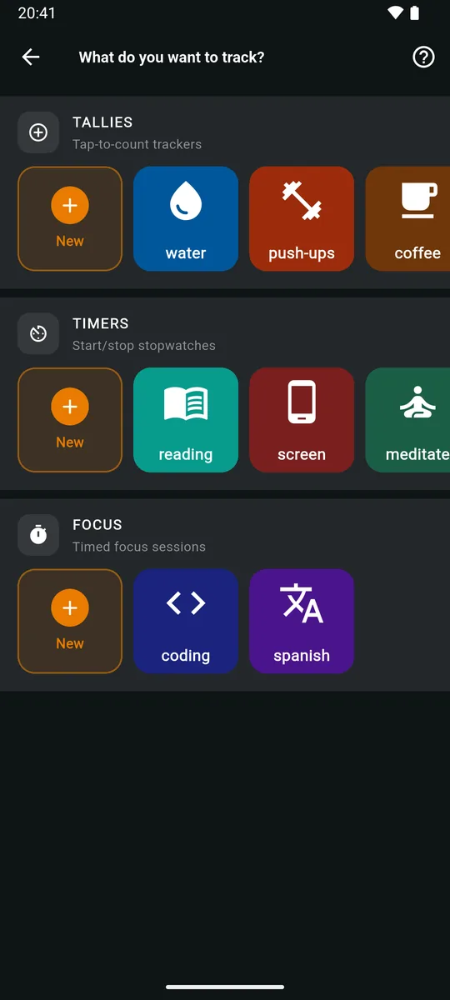
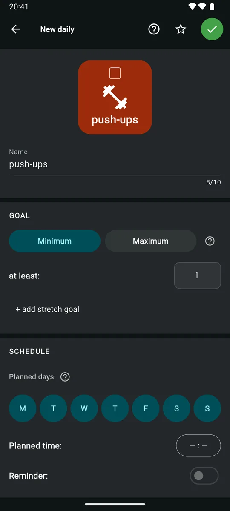
Create a weekly goal
- On the main screen, tap the pencil (Switch to edit mode), then the orange New tile at the end of WEEKLIES.
- What do you want to count this week? Tap a source under TALLIES, TIMERS or FOCUS, or the New tile in one of them to make one (as in Create a daily goal, step 3). To count days instead, pick one of your dailies under DAILIES.
- In New weekly, check the name and choose Minimum or Maximum.
- Set the target for the whole week. When counting a daily, that’s 1 to 7 days.
- Minimum goals only: optionally tap + add stretch goal, and turn on REMINDER for a nudge near the end of the week if the goal is still open. The editor shows both on Maximum goals too, but they do nothing there.
- Tap the green check.
Tip
A weekly on the same source as a daily fills up by itself as you log the daily.
- Counts a daily1 of 4 days, stretch 5
 Maximum weekly8 of 14 this week
Maximum weekly8 of 14 this week
Log progress
In run mode, tiles are buttons. What a tap does depends on the source.
Tally
Tap the tile to add 1. To fix a miscount, long-press and use − or +.
Stopwatch
Tap to start (the border starts breathing) and tap again to stop. To correct the time, long-press and use the chips +10', +1', −1', −10'.
Focus
Tap to open the timer and start a session (see Run a focus session). To log a session without the timer, long-press and tap +.
Weekly counting a daily
Log the daily; the weekly follows by itself.
Heads-up
On today’s stopwatch tile the chips change the number you see. While it counts down, −10' means 10 minutes less to go, which adds time. Past the target, or on past days, + adds time.
Mark today skipped or missed
Long-press a planned tile and tap for Skipped, for Missed, or the grey circular arrow for Normal. The popup closes after you choose.
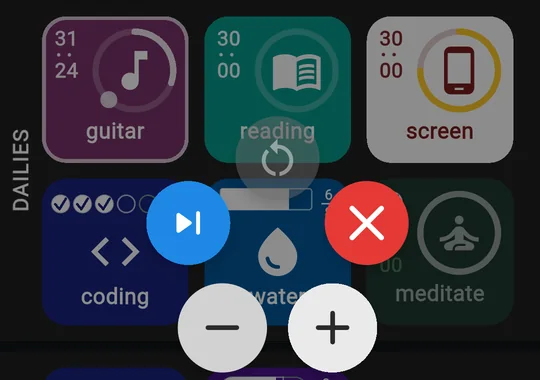
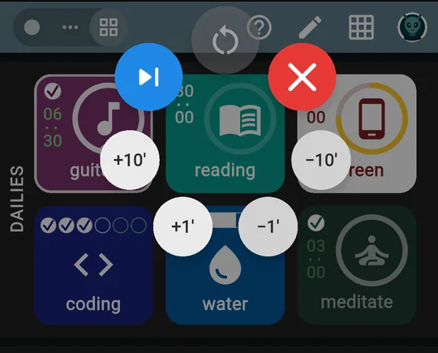
Run a focus session
- Tap a focus goal’s tile. The timer opens and starts counting down. The screen stays on while it runs.
- Pause and continue with the pause/play button.
- Done early? Tap Complete now. The session is logged straight away and the timer closes.
- To give up, tap stop (or Back). Stop session? asks you to confirm: × keeps it running, the check stops it without logging anything.
- When the time is up you’ll see Time’s up! and a big check. Tap anywhere to close. One session is logged.
Tip
Leaving the app doesn’t stop a session. It keeps counting in the notification, where Pause and Continue work with zoevo closed, and it’s credited even if Android closes the app.
Heads-up
Complete now is only on the timer screen, not in the notification. Inside a routine, a Focus step opens this same screen, so you can use it there too.

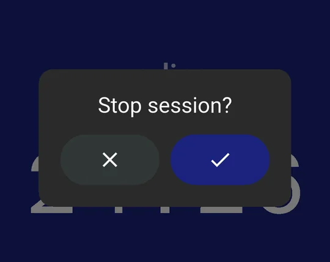
Use a stopwatch and its notification
- Tap a stopwatch goal’s tile to start it. You can run several at once.
- Pull down the notification shade. Each running stopwatch shows its clock, counting down to its daily’s target and then up the extra time.
- Tap Pause to stop it. Time is credited up to that moment, and the tile shows it stopped.
- Tap Continue to start it again, or tap the tile in zoevo.
Tip
A check mark in the title means the daily’s target is reached; a cross means a Maximum cap is exceeded. You’ll also get a one-off alert such as Goal time reached — the timer keeps running.
The stopwatch carries on until you stop it.
Heads-up
On Android 14 and later you can swipe the running notification away; it comes back the next time zoevo syncs. A stopwatch that runs past midnight splits its time across both days.
Build a routine
- In edit mode, tap New at the end of ROUTINES.
- Choose Blank routine, or a slot under FROM A TEMPLATE. Daily slots then offer S, M or L; Weekly review and Weekend reset have a single ready-made version. A template fills in the steps, color, icon, days, time and any sources it needs; those sources are only created when you save.
- Name it, then pick a Color and an Icon (Search helps). A yellow note warns you if another routine has the same name.
- Tap the Days it’s planned on. Optionally set Planned time: and Reminder:.
- Under ACTIVITIES, tap add activity and choose Simple, Tally, Focus or Timer.
- Fill in the step:
- a name and Place (optional),
- for Tally, Focus and Timer, a Source (or New),
- for Tally and Focus, the Count,
- the Duration (Timer: Planned duration; Focus works it out for you),
- for Simple, a color and an icon.
- Drag the handles to reorder, tap a step to edit it, or tap the bin (Remove) to delete it. The pill shows the total planned time.
- Tap the green check to save. If you back out of the editor instead, you return to the template picker.
Heads-up
A step’s kind can’t be changed afterwards: remove it and add a new one. The free plan allows 1 active routine.
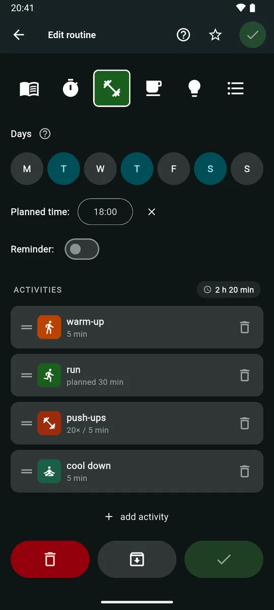
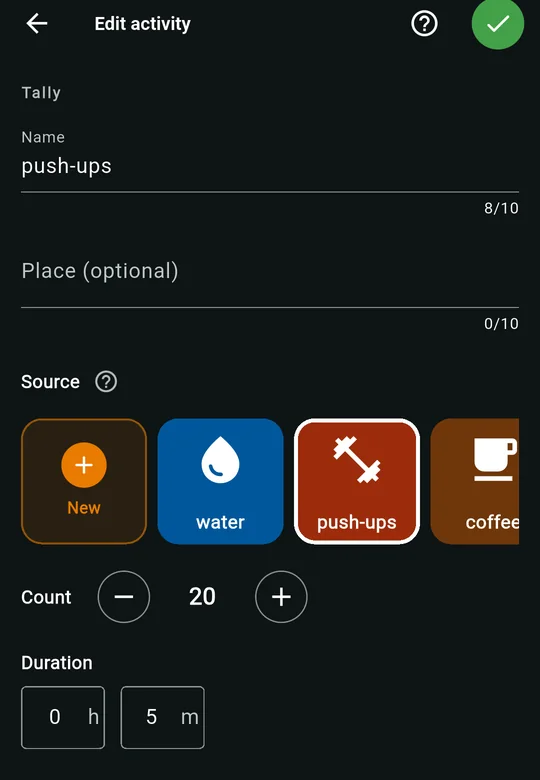
Run, pause or finish a routine
- In run mode, tap the routine’s tile. (A routine with no steps shows Empty routine.)
- The strip at the top shows every step. A white border marks the current one; a check or skip badge marks steps done or skipped. Tap any step, then Jump here to go straight to it. Steps you jump over count as skipped.
- Use the controls for the step (see activity kinds). Tally and Focus steps move on by themselves when the count is reached.
- Along the bottom: Back to the previous step, Skip, and Complete. Skip and Complete are always side by side. Complete stays disabled on Tally and Focus steps until the count is reached, and on a Timer step until you’ve started it.
- After the last step you’ll see “workout done” (with your routine’s name), plus how many steps you skipped and finished and the minutes it took. Tap the check (Complete routine) to log the run, or the back arrow to return to the last step.
Leaving early
Tap × or Back for Exit routine?:
- Pause and continue today: the tile shows Paused. Tap it any time today to pick up where you left off.
- Discard progress: the run isn’t logged, but tallies, stopwatch time and focus sessions already counted stay on their sources.
- Stay: back to the routine.
Heads-up
A paused run is dropped at midnight. Only runs you complete appear in routine history.
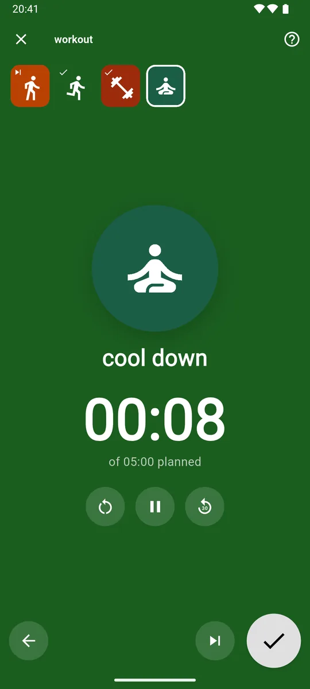
Simple stepA timed block. 
Tally stepTap + 1 for each rep. 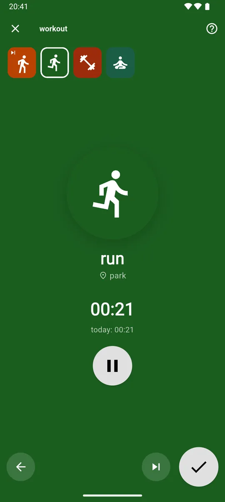
Timer stepRuns the source’s stopwatch. 
Done panelConfirm to log the run. 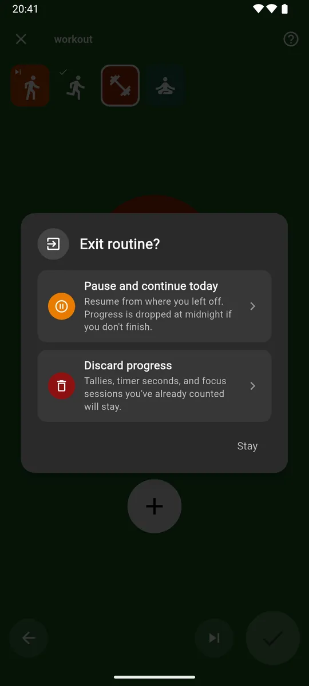
Exit routine?Pause or discard.
Skip, miss or backfill a day
Today
- Long-press the tile of a daily, weekly or routine.
- Tap the blue skip button for Skipped or the red cross for Missed. The grey circular arrow sets it back to Normal.
A past day of a daily
- Open the Timeline and go to the week.
- Tap the day’s cell.
- Set Normal, Missed or Skipped (planned days only), and use + / − or the time chips to record what really happened that day.
A past week of a weekly
- In the Timeline’s weeklies section, tap the week’s cell.
- Use the override buttons, or + to add to that week’s last day (today, in the current week) and − to take away from its days, latest first.
You can also backfill from Daily history (tap a day) and Source history (tap a day, then − 1 / + 1, or the ±1m, ±10m and ±60m buttons for a stopwatch).
Heads-up
Past plans can’t be changed, only the state and the value. Backfilling updates streaks and success rates. On the free plan the dailies Timeline goes back 4 weeks.
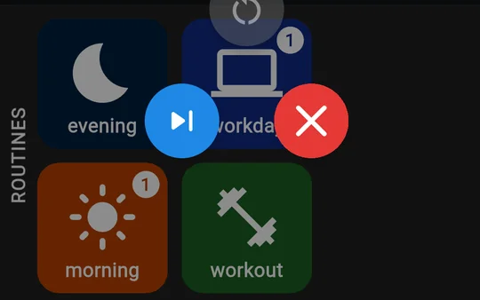
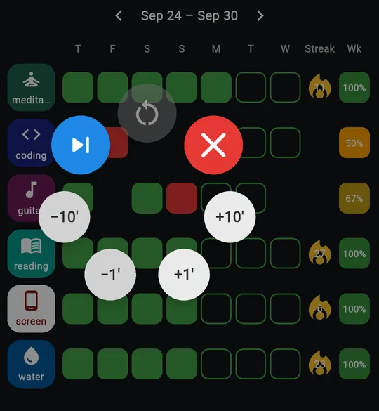
Read the Timeline
- Tap the grid icon on the main screen.
- In Dailies, use ‹ › or swipe to change week. Tap the info button for the Legend.
- Read each row left to right: the days of the week, the Streak flame and Wk, the week’s success rate. It can top 100%.
- Tap today or a future cell to plan or unplan that day.
- Tap a daily’s tile for its Daily history, long-press a weekly’s tile for its source history, or tap a routine’s tile for its routine history.
- Use the floating button to jump between Dailies, Weeklies and Routines.
- Turn your phone sideways for the Best streak and, on wide screens, the Mo and Yr rates.

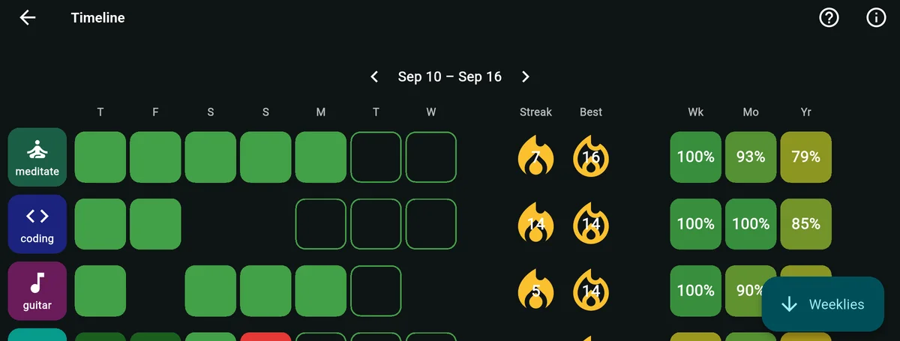
Plan the coming week
- Tap plan now on the main screen (it shows on the last 2 days of your week and the first day of the next), or go to Settings › PLAN THE WEEK › Plan coming week now.
- Optional: tap special-day pills to highlight columns, like a travel day.
- Check the Target week under the dates. Use the arrows to plan a different week.
- Tap cells to plan or unplan single goals and routines, or use the top row to plan or clear a whole day. Long-press today or a past cell to mark it skipped or missed.
- Tap the green check. Your changes were already saved as you went.
Tip
Away for a day? Unplan it rather than skipping it. If you do the habit anyway, an unplanned day still counts as a bonus.
- Long-press plan now for Dismiss (done for this week) or Turn off.
- For a nudge, go to Settings › PLAN THE WEEK, tap the time next to Plan-the-week reminder to change it, and turn on its switch.
- Opening the planner again later simply continues from the current plan.

Add the home-screen widget
- Long-press an empty spot on your home screen, open the widget list, find zoevo and place the 1×1 tile.
- Tap it (Tap to link). The Widget link screen opens.
- Pick a tally, timer or focus source. The widget takes that source’s icon, and zoevo returns you to your home screen.
- From now on, tap the widget to add 1, start or stop the stopwatch, or start or continue a focus session.
Tip
Add one widget per source you want at hand. To link a widget to a different source, remove it and add it again.
Heads-up
The link screen needs at least one source: Nothing to link yet — create a tally, timer, or focus source in the app first.
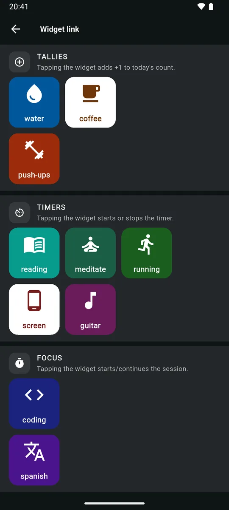
Set reminders
| Reminder | Where | Needs |
|---|---|---|
| Daily | Editor › Planned time:, then Reminder: | A planned time and Minimum |
| Routine | Editor › Planned time:, then Reminder: | A planned time |
| Weekly | Editor › REMINDER | Minimum |
| Plan the week | Settings › PLAN THE WEEK › Plan-the-week reminder | Set the time, then the switch |
If reminders don’t arrive
- Check that notifications are allowed for zoevo in Android settings, and that the channels “Daily reminders”, “Weekly reminders” and “Planning wizard” aren’t muted.
- Exclude zoevo from battery restrictions.
- Remember that reminders skip days that aren’t planned, are skipped or missed, or are already done, and that they may come a few minutes late.
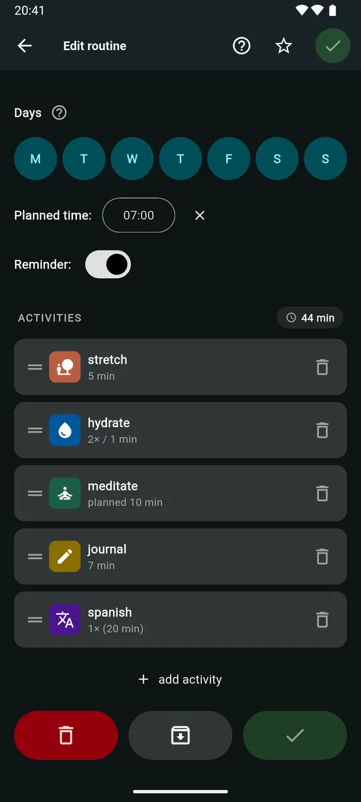
Switch display mode or appearance
- Tap the person icon to open Settings.
- Under MODE, tap Simple or Advanced.
- Under APPEARANCE, tap Dark, Light or System. System follows your phone’s dark theme.
- In Simple mode, use the eye button on the main screen to show or hide completed and not-planned items.
Tip
Mode and appearance are saved per device, so your phone and tablet can differ.
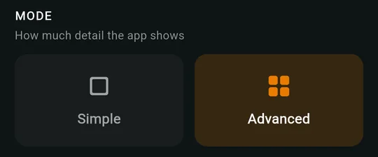
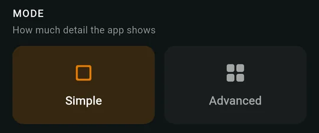
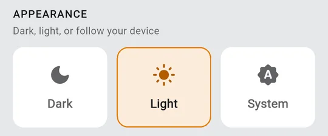
Change the week start
- Open Settings.
- Under PLAN THE WEEK, tap Week start and choose a day.
That changes:
- the order of the days on the Timeline,
- which days make up a week for weeklies and success rates,
- the day of the weekly reminder,
- and when the plan now button appears.
The day pills in the editors always start on Monday. The week start is saved with your account.
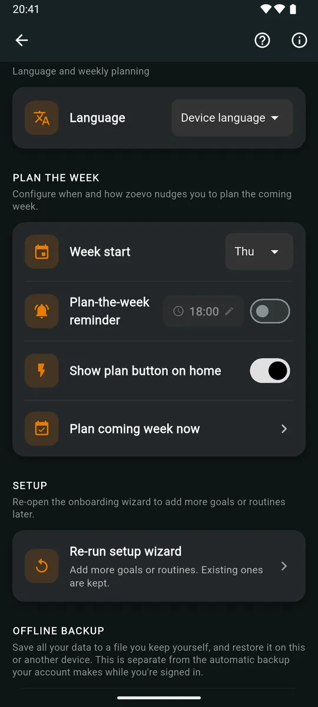
Pin, archive or delete
Pin
- In edit mode, tap the item to open its editor.
- Tap the star, then the green check.
Archive or unarchive
- In edit mode, long-press the tile and tap the grey button on the left, or open the editor and tap the middle button of the bottom row. For a source, switch to Sources first.
- Confirm with Archive (or unarchive).
Delete
- Use the red button in the same places.
- Read the “Will also delete:” and “Will convert to plain timed blocks:” lists, then confirm. Deleting can’t be undone.
Tip
Over the free limits? Archiving keeps all the history and frees a slot. See Archive or delete for what each one does.
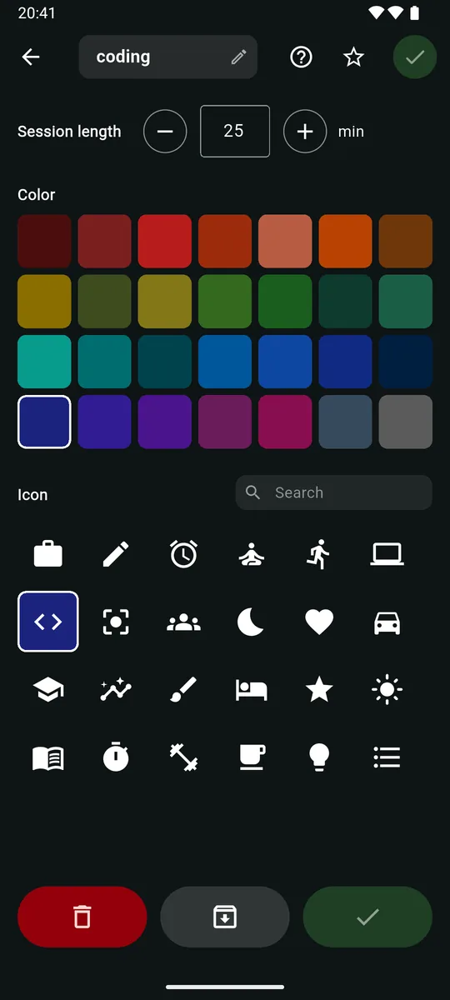
Try, buy, redeem or restore zoevo+
Start the free trial
- In Settings, tap the orange Upgrade to zoevo+ card.
- Tap Start 14-day free trial. No sign-in needed.
You’ll see Your free trial has started!
Subscribe
- On the zoevo+ screen, tap Sign in with Google.
- Under Choose a plan, pick Monthly or Yearly and complete the purchase in Google Play.
Redeem a promo code
- Sign in on the zoevo+ screen.
- Under Have a promo code?, enter the code and tap Redeem.
You’ll see Promo code applied!
Restore on a new phone
- Sign in with the same Google account.
- On the zoevo+ screen, tap Restore purchases.
You’ll see Your zoevo+ has been restored.
Heads-up
To cancel, use Google Play › Payments & subscriptions, or Manage in Google Play on the zoevo+ screen, which takes you there. The app never changes a subscription itself; the Manage subscription link in Settings just opens the zoevo+ screen. While a Google Play subscription renews, only a lifetime promo code can be redeemed (cancel the subscription afterwards, or it keeps charging), and each code works once per account.
Delete your data or account
| Option | Deletes | Keeps |
|---|---|---|
| Delete timeline | All tracked progress | Sources, goals, routines and settings. Plans for this week and the next 4 are rebuilt from each item’s weekday pattern. |
| Delete all data | Progress, settings, sources, goals and routines | Your account |
| Delete account | Your account and all data, on this device and in the cloud. You’re signed out. | Nothing. Greyed out unless you’re signed in. A zoevo+ subscription from Google Play isn’t cancelled: cancel it there first. |
- Open Settings and scroll to DATA DELETION. Its info icon explains the differences.
- Tap Delete timeline, Delete all data or Delete account.
- Type DELETE to enable the button, then tap Delete.
Heads-up
When you’re signed in, deleting needs an internet connection, and deleting your account may ask you to confirm your Google account again. As a guest, use Delete all data. You can also request deletion by email; our privacy policy explains what’s stored.
FAQ & troubleshooting
When something looks off
Most surprises have a simple reason. Open a question for the answer.
Reminders and alarms
My daily reminder didn’t come, or came late.
- Check it’s a Minimum goal with a planned time and the Reminder: switch on.
- Check today is planned, isn’t skipped or missed, and that you haven’t already reached the target. Reminders drop out once you’re done; zoevo notices when you open or leave the app.
- Allow notifications for zoevo, don’t mute the “Daily reminders” channel, and exclude zoevo from battery restrictions.
- Reminders are delivered inexactly, so a few minutes’ delay is normal. The “Alarms & reminders” permission doesn’t change that.
My focus alarm is late or silent.
Allow “Alarms & reminders” for zoevo: tap Open Settings in the Enable Alarms & Reminders dialog, or find zoevo under Apps in Android settings. Also check that the “Timer Alarms” channel isn’t muted.
Streaks and success rates
What counts toward a streak?
Planned days you succeeded on, and unplanned days you’d have succeeded on, add to it. Skipped days, unplanned misses and today while it’s open don’t count either way. A day marked Missed, a planned past day that failed, or going over a cap starts it over. Weeklies and routines have no streak. More on streaks.
Why is my success rate over 100%?
Days you succeeded on without planning them count as a bonus: they add to the days you hit without adding to the days planned.
Why is a success-rate cell empty?
Nothing was planned in that range yet, so there’s nothing to measure. An empty cell isn’t 0%.
My Maximum goal isn’t green today, though I’m under the cap.
A Maximum day turns green once it’s over, because until then you could still go over. It turns red the moment you exceed the cap.
I can’t change which days were planned last month.
Past plans are fixed. You can still mark past planned days skipped or missed and correct their values. See Skip, miss or backfill a day.
There’s a lock on the Timeline’s back arrow.
On the free plan, dailies history covers the current week and 4 weeks back. zoevo+ unlocks your full history. Nothing older has been deleted.
Goals and tiles
A goal vanished from the main screen.
- It may not be planned today while Show today’s planned is on, or it’s done while Show only outstanding is on.
- In Simple mode, completed and unplanned items are hidden until you tap the eye button.
- Archived items only show in edit mode.
I can’t switch to run mode.
You don’t have any active dailies, weeklies or routines yet. Create one in edit mode and the button comes alive.
Tapping my weekly does nothing.
That weekly counts the days you complete one of your dailies. Log the daily instead, and the weekly follows.
Two tiles changed when I logged one.
They use the same source, so one log moves both. That’s how a daily and a weekly on the same habit stay in step.
Changing a color changed another goal too.
Color and icon belong to the source, not the goal, so every goal and routine step on that source changes with it. The editor warns you when a source is shared.
Routines
My paused routine is gone.
Paused runs only last until midnight. Start the routine again to do a new run.
I discarded a routine, but the tallies still counted.
That’s by design. Every tap, stopwatch second and focus session is logged to its source as it happens and stays there. Discarding only means the routine run itself isn’t logged.
I deleted a source and my routine steps became plain.
Steps linked to a deleted source turn into Simple timed steps. Edit the routine to link them to another source: remove each step and add it again with the kind you want.
Stopwatches and the widget
A stopwatch ran past midnight.
Its time is split across the two days. Goal alerts for the new day are set up again the next time you open zoevo.
Pausing from the notification stopped my stopwatch.
That’s expected: for a stopwatch, Pause in the notification means stop. Tap Continue to start it again.
The widget says “Tap to link”.
It has no source yet, or its source was archived or deleted. Tap it and pick a source. Add the home-screen widget.
Account, zoevo+ and data
Do I need an account?
No. Guest mode is complete but isn’t synced: your data stays on the phone unless you export a backup file, which needs zoevo+. Signing in with Google adds automatic backup and sync. Buying zoevo+, redeeming codes and restoring purchases need a sign-in; the free trial doesn’t.
My guest data disappeared after I signed in.
That Google account already had zoevo data, so that’s what you see now. Your guest data is still on the phone: sign out to get back to it.
Some tiles have a lock after my trial ended.
You’re over the free limits, so the newest extra items are locked. Archive or delete items to unlock the rest, or upgrade. Nothing has been lost.
How do I cancel zoevo+?
In the Google Play Store, under Payments & subscriptions. Manage in Google Play on the zoevo+ screen takes you there. The app itself never cancels or changes a subscription.
The promo code won’t apply.
While an auto-renewing Google Play subscription is active, only a lifetime code works, and each code works once per account. The message tells you which: Invalid promo code.
, This promo code has expired.
, You've already used this promo code.
, This promo code has reached its redemption limit.
or While your Google Play subscription renews, only a lifetime code can be used.
After too many tries, wait an hour.
Can I export my data?
Yes, as a backup. With zoevo+, Settings › OFFLINE BACKUP › Export backup saves everything to one JSON file in a place you pick. Import backup reads such a file back on any phone, replacing all current data (when you’re signed in, that’s your account’s data on every device), and is free. There’s no CSV export.
Why can’t I delete my account?
Delete account only works when you’re signed in; as a guest it’s greyed out. Use Delete all data instead.
Deleting asks me to be online.
When you’re signed in, deletions have to reach the cloud copy of your data too, so they need a connection.
Can I replay the welcome tour?
No, it only plays once. Every screen has its own tour behind the help button instead; on the main screen that needs Advanced mode.
Where are the settings?
Tap the person icon (or your Google photo) on the main screen to open Settings.
Is there a light mode?
Yes. Settings › APPEARANCE › Light, or System to follow your phone’s dark theme. See Display mode and appearance.
zoevo is in the wrong language.
With Device language, zoevo uses the first language in your phone’s language list that it speaks (English, German, French or Spanish), otherwise English. To pick one yourself, go to Settings › PREFERENCES › Language.
Still stuck?
Write to us with what you tried and what you saw. A screenshot helps.